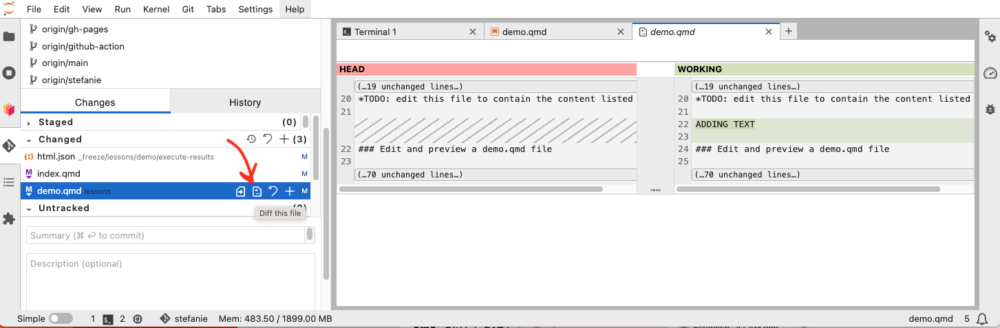
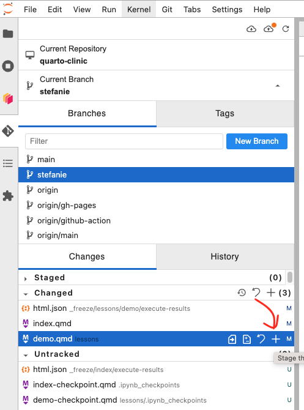
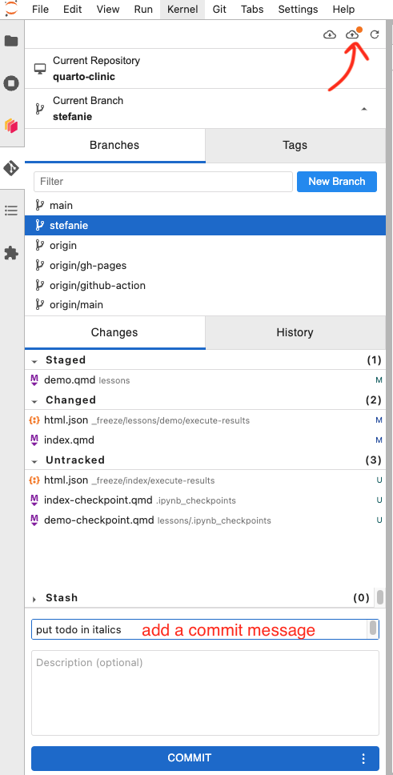
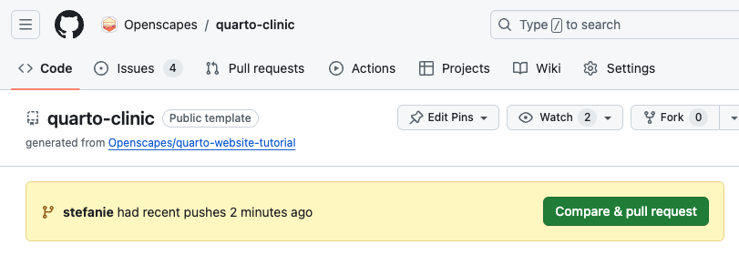

Part 2: Contribute via GitHub
Contribute your updates using GitHub
TODO: use text and some screenshot styles from 2021 Cloud Hackathon Tracking changes section. Those screenshots are so clean and text so clear.
GitHub commit, push, (move to GitHub.com….) pull request, review PRs, merge
- Good commit messages
- Push to GitHub then move to GitHub.com, screenshot yellow banner to compare and make a pull request
- Not finished proposing your updates? Can make Draft PR at the start so folks can see your thinking. Set Ready for Review when ready. Request specific reviewer(s).
- Condense/ adapt Review a pull request from Cookbook; note using “suggesting” and commenting, “Start your Review” instead of adding single comments (fewer notifications)
- Demo: have someone commit and push, PR, tag Stef as reviewer. Screenshare the above steps to review. That person screenshares to commit suggested edits, merge their PR.
- Task: people pair up to review each other’s PRs.
Diff, Stage, Commit, and Push your edits to GitHub
Inspect the differences your edits will introduce

In the Git tab “stage” your saved changes.

Commit your edits with a good commit message and push your edits.

TODO: Add storing GitHub PAT, from 2021 Cloud Hackathon Step 5.1. Configure Git (git config). Add to setup.qmd, or part2-github.qmd when we’re prompted at pushing to GitHub.
In the Hub, in our own branch of the Quarto Clinic repo, we have made one or more edits to the Clinic files, committed those updates, and pushed those commit(s) to GitHub. How do our suggested contributions get incorporated into the main Quarto Clinic repo and website?
Make a Pull Request
After pushing your edits, go to https://github.com/Openscapes/quarto-clinic/ and you will see a yellow banner inviting you to make a pull request to add your edits to the Clinic repo.

Not finished proposing your updates? Can make Draft PR at the start so folks can see your thinking. Set Ready for Review when ready and request specific reviewer(s).
Review a pull request
TODO: Adapt Reviewing a pull request (in Cookbook). Copied; Will edit to condense, using a Stef + Andy PR & Review of edits to this clinic.
Any pull request (PR) must be reviewed before it can be merged into the Cookbook. If you know someone who is familiar with the content you’re proposing to add, request their review.
The following notes are adapted from a coworking session in which Amy Steiker and Julie Lowndes reviewed a Cookbook pull request from Andy Barrett. (video, 19 min). Some generic mechanics of reviewing a pull request in GitHub are demonstrated in a screenshare (video, 7 min 41 sec).
In reviewing a pull request with lots of changes, it can be helpful to have windows open to view both the GitHub browser and the 2i2c Hub showing the Cookbook preview.
From the pull request page in GitHub browser, look at the elements of the pull request.
TODO: add screenshot of a PR page like the one in Cookbook, pull-request-example.png

- Start with Conversation tab:
- We can see all commits and comments on what Andy has worked on
- This is where we can add PR reviewers by clicking the gear icon next to “Reviewers” at the top right corner of this tab.
- Commit tab:
- More details on the commits that we saw under Conversation. When we click on one of the commits, we can see line by line what has changed under that commit (green lines are added, red lines have been removed)
- Files Changed tab:
- Often easier here to assess all the files that changed across the commits
- In Nav bar: Orange dot box signifies modified; Green plus box means something’s been added; Red minus box means deleted; Grey arrow box means renamed.
- Checks tab:
- Shows status of the Github Action that renders and deploys the Cookbook. We can know whether this PR has the ability to be deployed
Now, switch to the 2i2c Hub to view the Cookbook preview as it would appear if the pull request was merged:
- Terminal:
- Go to the Main branch and pull so that we have the most recent changes from remote.
git checkoutto the branch that has the PR: reorg_how_to_guides (note, this PR has been merged and the branch deleted so you won’t see this one; apply this example to your own)quarto preview- this will build the book with Andy’s suggested edits. TODO: Is this preview link still an issue?
We can now view the changes in the built Quarto book and concurrently look at the files changed in GitHub.
- Now we see a minor issue with capitalization in the
how-tos/subset/index.mdfile:- In GitHub under the “Files changed” tab of the PR, we can add a suggested edit by clicking the “plus” button below the line in question. (See minute 17:04 in the video for the mechanics of this. Suggesting specific commits can speed the contributor’s workflow compared with trying to describe what we’d like them to change.)
- We can click “Start a review” button so that Andy gets a single email when we’re done reviewing, rather than getting one notification for every edit we suggest.
- We can check the “Viewed” box on each file as we go through them in the Hub. Marking files as viewed can help track our review progress by minimizing the changes visible, but does not affect the review.
We will review each individual .qmd file and can come back to the main _quarto.yml if we see an issue with the main navigation.
Once our review is complete, we add a note in the GitHub review and click “Approve”, “Comment” or “Request changes”. In the note it can be really helpful to add a note of appreciation for some aspect of the contribution, tagging the submitter, saying they can merge the PR after making changes, and possibly add a summary of our requested edits including the number of changes requested. Some changes in the middle of a long list of edits can be marked as hidden conversations, so this can be helpful to the submitter to know they’ve seen everything.